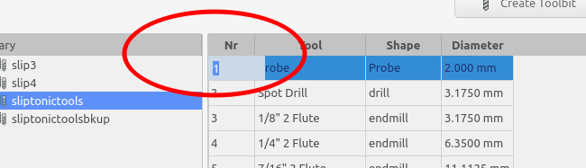

CAM ToolBitLibraryOpen
| This page is incomplete; it was marked as unfinished on the wiki. |
 CAM ToolBitLibraryOpen
CAM ToolBitLibraryOpen
- Menu location
-
- Workbenches
- Default shortcut
-
None
- Introduced in version
-
0.19
- See also
Description
The command  CAM ToolBitLibraryOpen is for creating, managing, and organize toolbits. Launching the library manager will display the manager as a modal dialog.
CAM ToolBitLibraryOpen is for creating, managing, and organize toolbits. Launching the library manager will display the manager as a modal dialog.
From here the user can perform all task related to toolbit management :
-
Select a default library
-
Create/edit/delete Toolbits
-
Create libraries
-
Modify libraries by adding and removing toolbits
-
Save a library to a new name
-
Export a library to the LinuxCNC tooltable (.tbl) format
Only the creation of new toolshapes cannot be done from the toolbit library manager. This is an advanced topic. (see CAM ToolShape creation).

The Library Manager
The left pane (1) shows a list of all libraries in the current working directory. The current library is highlighted.
The current working directory path is shown in the window title bar (2). A file selector (3) can be used to select a different working directory.
The right side pane (4) shows all toolbits in the currently selected library. Doubleclicking in the left column allows you to change the default tool number for this toolbit. The toolnumber will be used when creating a tool controller. The number is an attribute of the library. This means the same toolbit can exist in multiple tool libraries and have different default toolnumbers in each.
Tools at the top (5) are used to create/add/remove toolbits from the current library.
The save as button (6) can be used to write the library to a new file or export to a valid tooltable format. Currently only LinuxCNC format is supported.
The manager will remember the last active tool library and working directory between uses.
The close button (7) at bottom right will dismiss the tool library manager. Any changes to the current library are persisted to disk. Pressing the Escape key will dismiss the manager but not make any changes to the current library. Whichever library is selected when the manager is dismissed will become the new default and will be shown in the Toolbit Dock.
Usage
-
There are several ways to open the Toolbit Library Manager:
-
Select the option from the menu.
-
Open the ToolBit Selector as described and press the Open Library Editor button.
-
-
Select a library from the list.
-
Create/Add/Remove toolbits from the library.
-
Double-click a row to edit the toolbit.
-
Close the manager.
-
The selected library will become the default library for the dock.
Editing Toolbits
There are several ways to edit the toolbits and library:
-
By clicking the column headers of the library you can sort the toolbit library. The library will retain the sort and use it in the dock.
::

Sort the toolbit library via the column headers
-
By doubleclicking in the first column you can edit the toolbit number. This will be the default tool number used when creating a new tool controller. It is possible to use the same number for multiple toolbits.
::

Double click first column to edit toolbit number
-
Double clicking anywhere else in the row will open the toolbit editing panel. From here you can edit other properties of the toolbit.
::

Open toolbit editing panel by clicking anywhere else in the row.